CSS 布局及相关概念
常见基本概念
物理像素(physical pixel)
又被称为设备像素，它是显示设备中一个最微小的物理部件，每个像素可根据操作系统设置自己的颜色和亮度，正是这些设备像素的微小距离欺骗了肉眼看到的图像效果
设备独立像素(density-independent pixel)
设备独立像素也称为密度无关像素，可以认为是计算机坐标系统中的一个点，这个点代表一个可以由程序使用的虚拟像素(如 CSS 像素)，然后由相关系统转换为物理像素
CSS 像素
CSS 像素是一个抽像单位，主要使用在浏览器上，用来精确度量 Web 页面上的内容
一般情况下 CSS 像素被称为与设备无关的像素 (device-independent pixel)，简称 DIPs
屏幕密度(PPI)
屏幕密度是指一个设备表面上存在的像素数量，它通常以每英寸有多少像素来计算
设备像素比(device pixel ratio)
简称为 dpr，其定义了物理像素和设备独立像素的对应关系
设备像素比 ＝ 物理像素 / 设备独立像素在
JS中可通过window.devicePixelRatio获取到当前设备的dpr在
CSS中可通过-webkit-device-pixel-ratio、-webkit-min-device-pixel-ratio、-webkit-max-device-pixel-ratio进行媒体查询，对不同dpr的设备做一些样式适配，或使用resolution | min-resolution | max-resolution这些比较新的标准方式
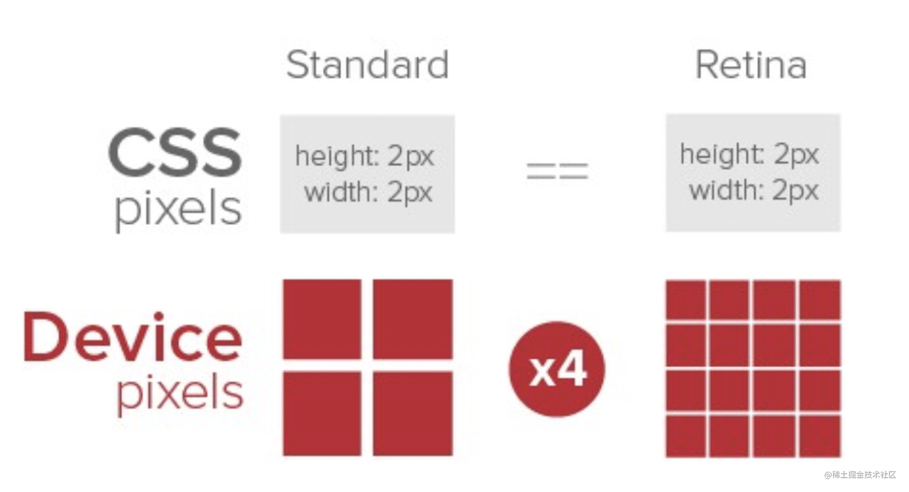
位图像素
一个位图像素是栅格图像（如 png、jpg、gif 等）最小数据单元，每个位图像素都包含着一些自身的显示信息（如显示位置、颜色值、透明度等）
理论上一个位图像素对应于一个物理像素，图片才能得到完美清晰的展示，如下图：对于 dpr = 2 的 retina 屏幕而言，一个位图像素对应于 4 个物理像素，由于单个位图像素不可以再进一步分割，所以只能就近取色，从而导致图片模糊
对于图片高清问题，比较好的方案就是两倍图片(@2x)，如 200 × 300(CSS pixel) img 标签，需提供 400 × 600 的图片
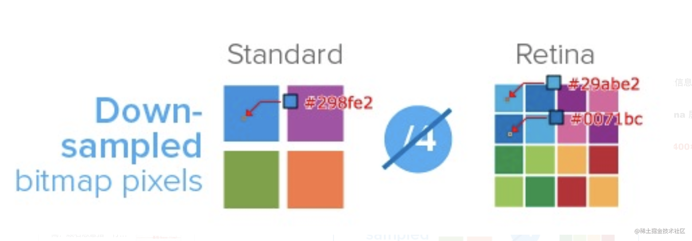
缩放比 scale
scale = 1/dpr
视窗 viewport
简单理解，viewport 是严格等于浏览器窗口，在桌面浏览器中 viewport 就是浏览器窗口的宽高
但在移动端设备上有点复杂，阅读推荐：解读 viewport—网页自适应移动 app 神器
媒体查询 @media
媒体查询由一个可选的媒体类型和零个或多个使用媒体功能的限制了样式表范围的表达式组成，如宽度、高度和颜色
媒体查询添加自 CSS3，允许内容的呈现针对一个特定范围的输出设备而进行裁剪，而不必改变内容本身，非常适合 web 网⻚应对不同型号的设备而做出对应的响应适配
媒体查询包含一个可选的媒体类型和满足 CSS3 规范的条件下，包含零个或多个表达式，这些表达式描述了媒体特征，最终会被解析为 true 或 false
若媒体查询中指定的媒体类型匹配展示文档所使用的设备类型且所有的表达式的值都是 true 则该媒体查询的结果为 true，媒体查询内的样式将会生效
1 | <!-- link 元素中的 CSS 媒体查询 --> |
阅读推荐：随方逐圆 – 全面理解 CSS 媒体查询
常见布局概念
静态布局（Static Layout）
传统 Web 设计，网页上的所有元素的尺寸一律使用 px 作为单位，不管浏览器尺寸具体是多少，网页布局始终按照最初代码的布局来显示
设计方法
pc 端：居中布局，所有样式使用绝对宽度/高度 (px) 设计一个Layout，在屏幕宽高有调整时使用横向和竖向的滚动条来查阅被遮掩部分移动设备：另外建立移动网站，单独设计一个布局，使用不同的域名如wap.或m.
优点：这种布局方式对设计师和 CSS 编写者来说都是最简单的，亦没有兼容性问题
缺点：这种布局方式不能根据用户的屏幕尺寸做出不同的表现，固定像素尺寸的网页是匹配固定像素尺寸显示器的最简单办法，但这种方法不是一种完全兼容目前网页的制作方法，需一些适应未知设备的方法
流式布局（Liquid Layout）
其特点是页面元素的宽度按照屏幕分辨率进行适配调整，但整体布局不变，代表作如：栅栏系统（网格系统）
设计方法
- 使用
%百分比定义宽度，高度大都是用px来固定 - 可根据可视区域
viewport和父元素的实时尺寸进行调整，尽可能的适应各种分辨率，往往配合max-width/min-width等属性控制尺寸流动范围以免过大或过小影响阅读 - 图片等也是如此，
width:100%，max-width一般设定为图片本身的尺寸，防止被拉伸而失真
布局特点：屏幕分辨率变化时页面里元素大小会变化但布局不变，这就导致若屏幕太大或太小都会导致元素无法正常显示
优点：该布局方式在 Web 前端开发的早期历史上用来应对不同尺寸的 PC 屏幕（那时屏幕尺寸差异不会太大），在移动端开发也是常用布局方式
缺点：
- 主要问题是若屏幕尺度跨度太大，在相对其原始设计而言过小或过大的屏幕上不能正常显示
- 因为宽度使用
%百分比定义，但高度和文字大小等大都是用px来固定，所以在大屏幕手机下显示效果会变成有些页面元素宽度被拉的很长，但高度、文字大小还是和原来一样（即这些东西无法变得“流式”），显示非常不协调
自适应布局（Adaptive Layout）
创建多个静态布局，每个静态布局对应一个屏幕分辨率范围，使用 @media 媒体查询来切换多个布局
改变屏幕分辨率可以切换不同的静态局部（页面元素位置发生改变），但在每个静态布局中页面元素不随窗口大小的调整发生变化，可以把自适应布局看作是静态布局的一个系列
屏幕分辨率变化时页面里面元素的位置会变化而大小不会变化
设计方法：使用 @media 媒体查询给不同尺寸和介质的设备切换不同的样式，在优秀的响应范围设计下可以给适配范围内的设备最好的体验
响应式布局（Responsive Layout）
响应式设计的目标是确保一个页面在所有终端上（各种尺寸的 PC、手机、手表、冰箱的 Web 浏览器等）都能显示出令人满意的效果
对 CSS 编写者而言，在实现上不拘泥于具体手法，但通常是糅合了流式布局 + 弹性布局，搭配媒体查询技术使用，分别为不同的屏幕分辨率定义布局（响应式几乎已经成为优秀页面布局的标准）
布局特点：每个屏幕分辨率下会有一个布局样式，即元素位置和大小都会变
优点：适应 pc 和移动端；若足够耐心，效果完美
缺点：
- 媒体查询是有限的，即可枚举出来的只能适应主流的宽高
- 要匹配足够多的屏幕大小，工作量不小，设计也需要多个版本
弹性布局（rem/em 布局）
rem 是相对于 HTML 标签的 font-size 大小而言的，而 em 是相对于其父元素的（非 font-size 属性是相对于自身的 font-size）
使用 em/rem 相对 % 百分比更加灵活，同时可支持浏览器的字体大小调整和缩放等的正常显示
布局特点：
- 包裹文字的各元素的尺寸采用
em/rem做单位 - 页面的主要划分区域的尺寸仍使用
百分数或px做单位（同「流式布局」或「静态/固定布局」） - 早期浏览器不支持整个页面按比例缩放，仅支持网页内文字尺寸的放大，这种情况下使用
em/rem做单位，可以使包裹文字的元素随着文字的缩放而缩放
浏览器的默认字体高度一般为 16px，即 1em: 16px，但 1:16 的比例不方便计算，为了使单位 em/rem 更直观，CSS 编写者常常将页面跟节点字体设为 62.5%，如选用 rem 控制字体时需先设置根节点 html 的字体大小，因浏览器默认字体大小 16px * 62.5% = 10px，这样 1rem 便是 10px，方便了计算
用 em/rem 定义尺寸的另个好处：更能适应缩进、以字体单位 padding 或 margin、浏览器设置字体尺寸等情况，因为 em/rem 相对于字体大小会同步改变，如：p { text-indent: 2em; }
使用 rem 单位的弹性布局在移动端也很受欢迎，淘宝的 Flexible 让 rem 布局得以流行开来；此 Flexible 实现也有一些不足，此外也涌现出了多种实现 rem 布局的方案，如直接使用 html{ font-size: 62.5%; } 基准值配合 JS 来设置根元素字体大小或使用媒体查询来设置根元素字体大小等
传统常见布局方式
文档流布局
这是最基本的布局方式，按照文档的结构顺序一个一个显示出来，块元素独占一行，行内元素共享一行
浮动布局
浮动方式布局就是使用 float 属性，使元素脱离文档流浮动起来
定位布局
通过 position 属性来进行定位
table 布局
直接用 table 等标签进行布局
注意：table 布局自动垂直居中
table 的好处：在某些场合使用 table 是完全合适的，如用 table 做表格
若无法判断是否应该使用 table，请先问自己几个问题，若答案仅仅是“我猜……也许不是” 则就不应该用 table
- 这些行或列的信息是否共享某一个属性？如每行显示一个学生的信息，所有学生都有个‘姓名’属性
- 若改变了这些行或列的顺序，是不是依然有意义或有同样的效果？
- 若将行变成列或将列变成行，是不是依然有意义或有同样的效果？
但在实际的项目开发过程中，不建议用 table 进行布局，原因如下：
table比其它html标记占更多的字节，可能会造成下载时间延迟、占用服务器更多流量资源等table会阻挡浏览器渲染引擎的渲染顺序（会延迟页面的生成速度），table须在页面完全加载后才显示，没有加载完毕前table为一片空白table里显示图片时需把单个、有逻辑性的图片切成多个图（增加设计的复杂度、增加页面加载时间、增加http会话数）在某些浏览器中
table里文字的拷贝会出现问题（会让用户不悦）table会影响其内部的某些布局属性的生效，如元素的height:100%（限制页面设计的自由性）学了
CSS的知识后，会发现使用table做页面布局更麻烦table代码会让阅读者抓狂（不但无法利用CSS且会不知所云，尤其在进行页面改版或内容抽取时）table一旦设计完成就变成”死”的，很难通过CSS让它展现新的面貌（CSS ZEN GARDEN）
div + css的布局较table布局有什么优点?
- 改版时更方便，只需改
css文件- 页面加载速度更快、结构化清晰、页面显示简洁，表现与结构相分离
- 易于优化(
SEO)，搜索引擎更友好
flex 布局
概念
2009 年对前端来说是不平凡的一年，
HTML5定稿、ES5.1发布、flex应运而生。flex是flexible box的缩写，意为"弹性布局"，天生响应式，生而为布局。使用及其简单，可以简便、完整、响应式地实现各种页面布局根据规范中的描述可知道，
flexbox模块提供了一个有效的布局方式，即使不知道视窗大小或未知元素情况之下都可智能的、灵活的调整和分配元素和空间两者间的关系，简单理解就是可自动调整、计算元素在容器空间中的大小
flex 是一种新型的布局方式，使用该布局方式可实现几乎所有想要的效果。但要注意其浏览器的兼容性，flex 只支持 ie 10+，因此要根据项目情况使用，具体可查阅：Can I use 查阅兼容性情况
FFC (flex formatting context)
flexbox 布局新定义了格式化上下文，类似 BFC（block formatting context），除了布局和一些细节不同以外，一切规则都和 BFC 相同
注意：这里的
flexbox是指设置了display: flex;或display: inline-flex;的盒子，不是单单设置了display: flex;的盒子
设置了 display: flex; 或 display: inline-flex 的元素，和 BFC 一样不会被浮动的元素遮盖、不会垂直外边距坍塌等
对于设置了 display: inline-flex 的盒子来说，可类比 display: inline-box 来理解，它不会独占一行，但可设置宽和高
与 BFC 的细微区别：
flexbox不支持::first-line和::first-letter这两种伪元素vertical-align对flexbox中的子元素是没有效果的float和clear属性对flexbox中的子元素是没有效果的，也不会使子元素脱离文档流(但对flexbox是有效果的！)多栏布局（column-*）在flexbox中也是失效的，即不能使用多栏布局在flexbox排列其下的子元素（鱼和熊掌不可兼得）flexbox下的子元素不会继承父级容器的宽
对 flex 盒模型的设计期望
- 在任何流动的方向上（包括上下左右）都能进行良好的布局
- 可逆序或以任意顺序排列布局
- 可线性的沿着主轴一字排开或沿着侧轴换行排列
- 可弹性的在任意的容器中伸缩大小
- 可使子元素们在容器主轴或侧轴方向上进行对齐
- 可动态的沿着主轴方向伸缩子级的尺寸，与此同时保证父级侧轴方向上的尺寸
基本概念
在 flex 容器中默认存在两条轴，水平主轴(main axis) 和垂直的交叉侧轴(cross axis)，这是默认的设置，当然可通过修改使垂直方向变为主轴，水平方向变为交叉轴
容器中的每个单元块被称为 flex item，每个项目占据的主轴空间为 main size, 占据的交叉轴的空间为 cross size
注意：不能先入为主认为宽度就是
main size，高度就是cross size，这个还要取决于主轴方向，若垂直方向是主轴，则项目的高度就是main size
writing-mode 属性可改变文档流方向，此时主轴是垂直方向，但实际开发很少遇到这样场景，因此初学时直接使用水平方向和垂直方向理解不会有任何问题，反而易于理解
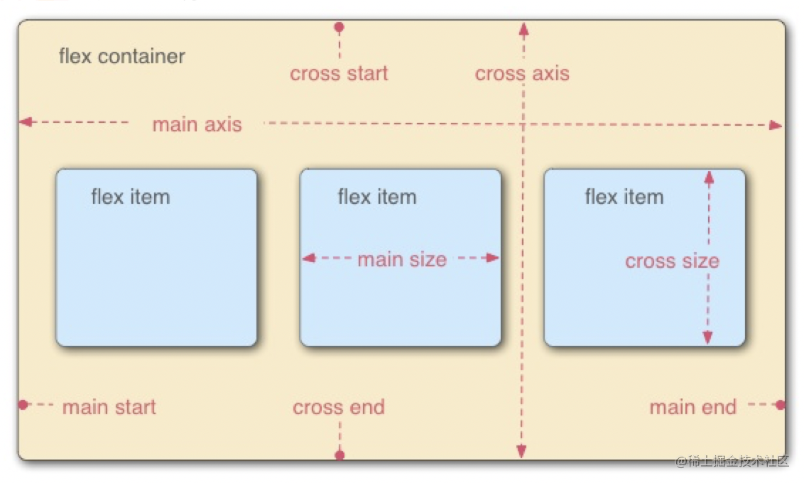
使用 flex 布局
实现 flex 布局需先指定一个容器，任何一个容器只要被指定为 flex 布局，该容器内部元素就可使用 flex 进行布局 -> 给 div 这类块状元素元素设置 display: flex 或给 span 这类内联元素设置 display: inline-flex，flex 布局即创建！
其中，直接设置 display: flex 或 display: inline-flex 的元素称为 flex 容器，里面的子元素称为 flex 子项
注意：设置
flex布局后子元素的float、clear、vertical-align的属性将会失效
flex 布局相关属性分为两拨：
- 一拨作用在
flex容器上（此处以“父容器”代替） - 还有一拨作用在
flex子项（此处以“子容器”代替）上 - 具体参见下表，无论作用在父容器还是子容器上，都是控制子容器的呈现，只是前者控制的是整体，后者控制的是个体
| 作用在父容器 | 作用子容器 |
|---|---|
| flex-direction | order |
| flex-wrap | flex-grow |
| flex-flow | flex-shrink |
| justify-content | flex-basis |
| align-items | flex |
| align-content | align-self |
作用在父容器上的属性：
flex-direction：决定主轴的方向（主轴默认是水平方向，从左至右），用来控制子项整体布局方向；和CSS的 direction 属性相比就是多了个flex1
2
3
4
5// row：默认值，显示为行，方向为当前文档水平流方向（主轴），默认情况下是从左往右。如果当前水平文档流方向是 rtl（如设置 direction: rtl），则从右往左
// row-reverse：显示为行，但方向和 row 属性值是反的
// column：显示为列，垂直方向，起点在上沿
// column-reverse：显示为列，垂直方向，但方向和 column 属性值是反的
flex-direction: row | row-reverse | column | column-reverse;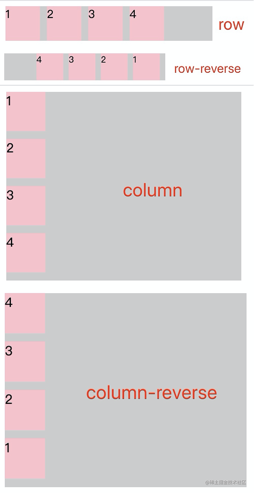
flex-wrap：决定子容器是否换行显示，默认情况下项目都排在主轴线上，使用flex-wrap可实现项目的换行1
2
3
4// nowrap：默认值，表示单行显示不换行，即当主轴尺寸固定、空间不足时，项目尺寸会随之调整而并不会挤到下一行
// wrap：子容器主轴总尺寸超出父容器时换行，第一行在上方
// wrap-reverse：宽度不足换行显示，但是从下往上开始，即原本换行在下面的子项跑到上面
flex-wrap: nowrap | wrap | wrap-reverse;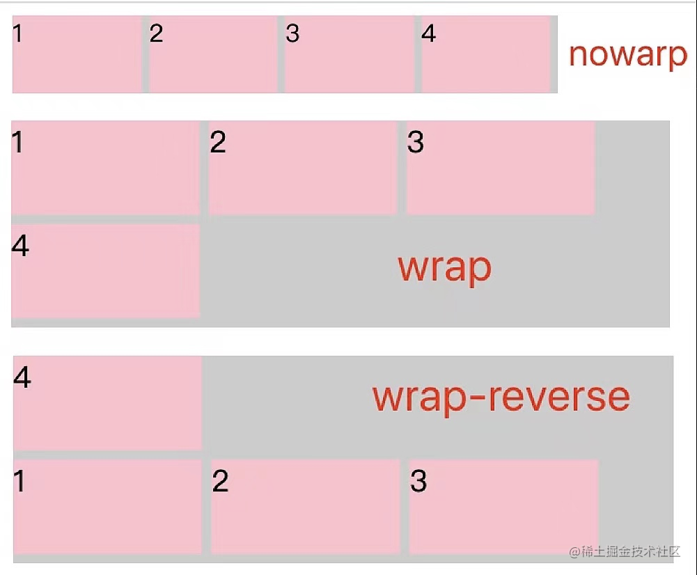
flex-flow：是flex-direction和flex-wrap的缩写形式，表示flex布局的flow流动特性，默认值为row nowrap1
flex-flow: <flex-direction> || <flex-wrap>;
justify-content：决定了水平方向子容器的对齐和分布方式，CSStext-align有个属性值为justify，可实现两端对齐。justify-content可看成是text-align的远房亲戚，不过前者控制flex元素的水平对齐外加分布，后者控制内联元素的水平对齐1
2
3
4
5
6
7
8// flex-start：默认值，逻辑 CSS 属性值，与文档流方向相关，默认表现为左对齐
// flex-end：逻辑CSS属性值，与文档流方向相关，默认表现为右对齐
// center：表现为居中对齐
// space-between：表现为两端对齐，between 是中间的意思，意思是多余的空白间距只在元素中间区域分配
// space-around：around 是环绕的意思，意思是每个子容器两侧都环绕互不干扰的等宽的空白间距，最终视觉上边缘两侧的空白只有中间空白宽度一半
// space-evenly：evenly 是匀称、平等的意思，即视觉上每个子容器两侧空白间距完全相等
justify-content: flex-start | flex-end | center | space-between | space-around | space-evenly;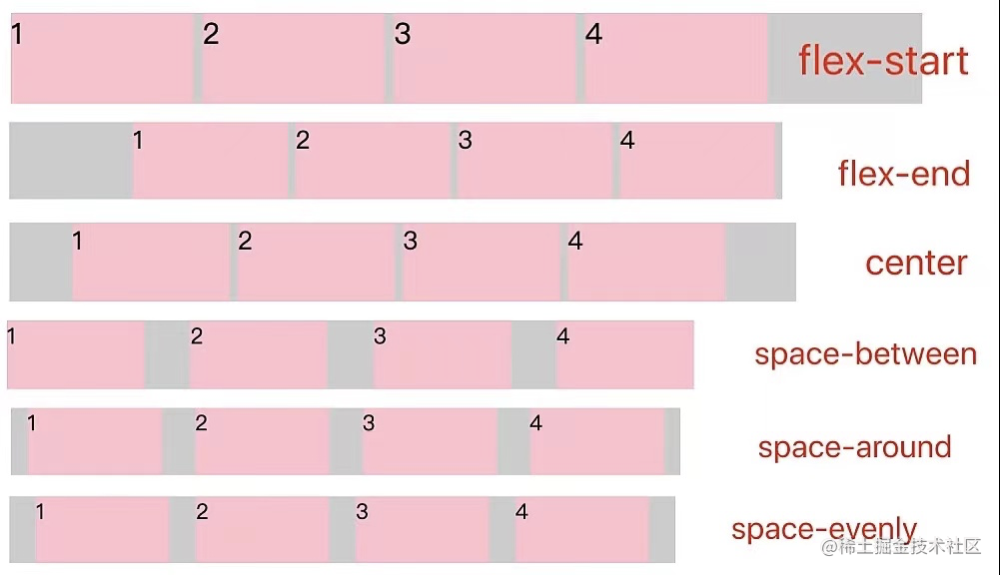
align-items：align-items中的items指的就是子容器，因此align-items指的就是子容器相对于父容器在垂直方向上的对齐方式1
2
3
4
5
6// stretch：默认值，子容器拉伸，即若子容器未设置高度或设为 auto，将占满整个父容器的高度，若子容器设置了高度，则按照设置的高度值渲染，而非拉伸
// flex-start：逻辑 CSS 属性值，与文档流方向相关，默认表现为容器顶部对齐
// flex-end：逻辑 CSS 属性值，与文档流方向相关，默认表现为容器底部对齐
// center：表现为垂直居中对齐
// baseline：表现为所有 =子容器都相对于父容器的基线（字母 x 的下边缘）对齐
align-items: stretch | flex-start | flex-end | center | baseline;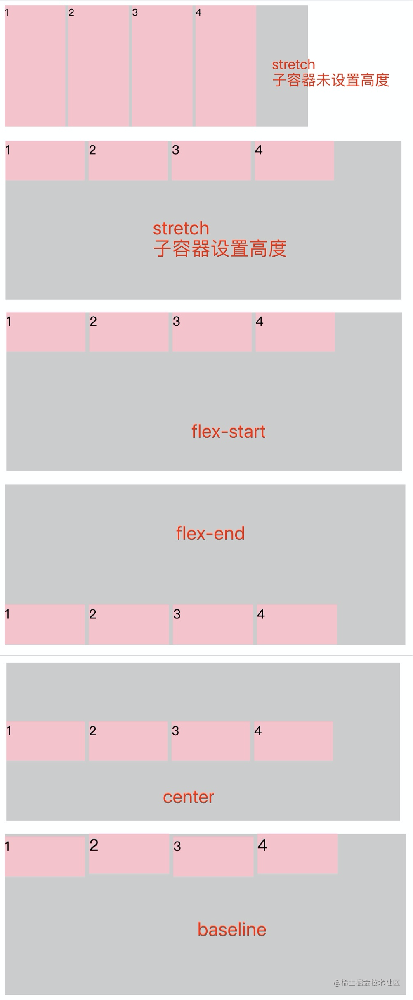
align-contentalign-content可看成和justify-content是相似且对立的属性，justify-content指明水平方向子容器的对齐和分布方式，align-content则是指明垂直方向每一行子容器的对齐和分布方式，若所有子容器只有一行，则 align-content 属性是没有任何效果的当
flex-wrap设置为nowrap时，容器仅存在一根轴线，因为项目不会换行则不会产生多条轴线；当flex-wrap设置为wrap时，容器可能会出现多条轴线，这时就需要去设置多条轴线之间的对齐方式
1
2
3
4
5
6
7
8// stretch：默认值，每行子容器都等比例拉伸，如若共两行子容器，则每一行拉伸高度是 50%
// flex-start：逻辑CSS属性值，与文档流方向相关，默认表现为顶部堆砌
// flex-end：逻辑CSS属性值，与文档流方向相关，默认表现为底部堆放
// center：表现为整体垂直居中对齐
// space-between：表现为上下两行两端对齐。剩下每一行元素等分剩余空间
// space-around：每一行元素上下都享有独立不重叠的空白空间
// space-evenly：每一行元素都完全上下等分
align-content: stretch | flex-start | flex-end | center | space-between | space-around | space-evenly;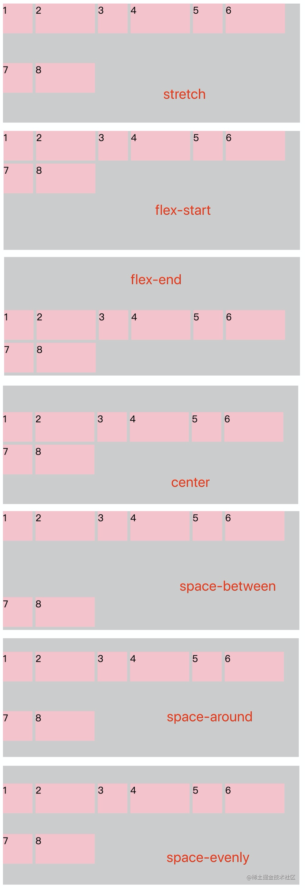
作用在子容器上的属性：
order：定义子容器在父容器中的排列顺序，数值越小，排列越靠前，默认值为01
order: <integer>; /* 整数值，默认值是 0 */
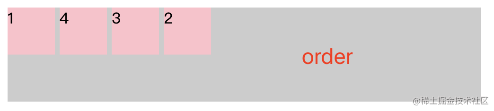
flex-growgrow是扩展的意思，扩展的是子容器所占据的宽度，定义项目的放大比例，扩展所侵占的空间就是除去元素外的剩余空白间隙flex-grow不支持负值，默认值是0，表示不占用剩余的空白间隙扩展自己的宽度，若flex-grow > 0，则父容器剩余空间的分配就会发生，具体规则如下：- 所有剩余空间总量是
1 - 若只有一个子容器设置了
flex-grow属性值：- 若
flex-grow < 1，则扩展空间就是总剩余空间和这个比例的计算值 - 若
flex-grow > 1，则独享所有剩余空间
- 若
- 若有多个子容器设置了
flex-grow属性值- 若
flex-grow 值总和 < 1，则每个子容器扩展空间就是总剩余空间和当前元素设置的flex-grow比例的计算值 - 若
flex-grow 值总和 > 1，则所有剩余空间被利用，分配比例就是flex-grow属性值的比例，如所有的子容器都设置flex-grow: 1，则表示剩余空白间隙大家等分；若设置的flex-grow比例是1:2:1，则中间的子容器占据一半的空白间隙，剩下的前后两个元素等分
- 若
- 若当所有项目以
flex-basis的值排列完后发现空间不够且flex-wrap：nowrap时，此时flex-grow则不起作用，就需要接下来的flex-shrink属性
1
flex-grow: <number>; /* 数值，可以是小数，默认值是 0 */
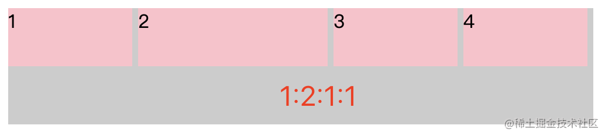
- 所有剩余空间总量是
flex-shrink，要处理当父容器空间不足时，单个元素的收缩比例flex-shrink不支持负值，默认值是1，即默认所有子容器都会收缩；若设置为0，则表示不收缩，保持原始的fit-content宽度flex-shrink的内核跟flex-grow神似，flex-grow是空间足够时如何利用空间，flex-shrink则是空间不足时如何收缩腾出空间。此属性要生效，要设置父容器的flex-wrap: nowrap;- 若只有一个子容器设置了
flex-shrinkflex-shrink < 1则收缩的尺寸不完全，会有一部分内容溢出父容器flex-shrink > 1，则收缩完全，正好填满父容器
- 若多个子容器设置了
flex-shrinkflex-shrink 值的总和 < 1则收缩的尺寸不完全，每个元素收缩尺寸占“完全收缩的尺寸”的比例就是设置的flex-shrink的值flex-shrink 值的总和 > 1则收缩完全，每个元素收缩尺寸的比例和flex-shrink值的比例一样
1
flex-shrink: <number>; /* 数值，默认值是 1 */
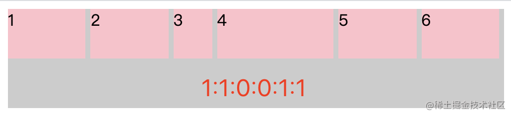
flex-basis- 定义了在分配多余空间前，项目占据的主轴空间，浏览器根据这个属性，计算主轴是否有多余空间
- 它可以设为跟
width或height属性一样的值（如350px），则项目将占据固定空间 - 默认值：
auto，项目本来的大小。item的宽高取决于width、height值，没有设置width、height就按内容宽度来 - 当主轴为水平方向且设置了
flex-basis时，项目的width设置值会失效，flex顾名思义就是弹性的意思，因此实际上不建议对flex子项使用width属性，因为不够弹性 - 当剩余空间不足时，子容器的实际宽度通常不是设置的
flex-basis，因为flex布局剩余空间不足时默认会收缩 - 当
flex-basis: 0%时，是把该项目视为零尺寸，即使声明该尺寸为140px，也并没有什么用 - 当
flex-basis: auto时，则根据尺寸的设定值(如为100px)，则这100px不会纳入剩余空间 flex-basis需跟flex-grow和flex-shrink配合使用才能发挥效果
1
flex-basis: <length> | auto; /* default auto */
flexflex属性是flex-grow、flex-shrink、flex-basis的缩写形式，其中flex-shrink和flex-basis是可选的，默认值为0 1 autoflex默认值等同于flex: 0 1 auto;flex: none等同于flex: 0 0 auto;flex: auto等同于flex: 1 1 auto;
1
2
3
4
5
6
7
8
9
10
11
12
13
14
15
16
17
18
19
20
21
22
23
24
25
26
27
28
29
30
31
32
33
34
35
36
37
38
39
40
41
42
43
44
45
46
47
48
49
50flex: none | auto | [ <'flex-grow'> <'flex-shrink'>? || <'flex-basis'> ]
// 当 flex 取值为一个非负数字，则该数字为 flex-grow 值，flex-shrink 取 1，flex-basis 取 0%
// 如下同等
.item {flex: 1;}
.item {
flex-grow: 1;
flex-shrink: 1;
flex-basis: 0%;
}
// 当 flex 取值为 0 时，对应的三个值分别为 0 1 0%
item {flex: 0;}
.item {
flex-grow: 0;
flex-shrink: 1;
flex-basis: 0%;
}
// 当 flex 取值为一个长度或百分比，则视为 flex-basis 值，flex-grow 取 1，flex-shrink 取 1
// 有如下等同情况（注意 0% 是一个百分比而不是一个非负数字）
.item-1 {flex: 0%;}
.item-1 {
flex-grow: 1;
flex-shrink: 1;
flex-basis: 0%;
}
.item-2 {flex: 24px;}
.item-2 {
flex-grow: 1;
flex-shrink: 1;
flex-basis: 24px;
}
// 当 flex 取值为两个非负数字，则分别视为 flex-grow 和 flex-shrink 的值，flex-basis 取 0%，如下是等同的：
.item {flex: 2 3;}
.item {
flex-grow: 2;
flex-shrink: 3;
flex-basis: 0%;
}
// 当 flex 取值为一个非负数字和一个长度或百分比，则分别视为 flex-grow 和 flex-basis 的值，flex-shrink 取 1，如下是等同的：
.item {flex: 11 32px;}
.item {
flex-grow: 11;
flex-shrink: 1;
flex-basis: 32px;
}align-selfalign-self指控制单独某个flex子项的垂直对齐方式，父容器上的align-items属性，表示子容器们，是全体；这里是self，单独一个个体- 唯一区别：
align-self多了个auto（默认值），表示继承自flex容器的align-items属性值，其他属性含义一模一样
补充说明父容器的 flex-wrap 与子容器的 flex-shrink、flex-grow 之间的关系：
当
flex-wrap: wrap | wrap-reverse且子容器宽度和 < 父容器宽度时，flex-grow会起作用，子容器会根据flex-grow设定的值放大（为0的项不放大）当
flex-wrap: wrap | wrap-reverse，且子容器宽度和 > 父容器宽度时，首先一定会换行，换行后每一行的右端都可能会有剩余空间（最后一行包含的子项可能比前几行少则剩余空间可能会更大），这时flex-grow会起作用，若当前行所有子容器的flex-grow都为0，则剩余空间保留；若当前行存在一个子容器的flex-grow > 0，则剩余空间会被flex-grow > 0的子容器占据当
flex-wrap: nowrap，且子容器宽度和 < 父容器宽度时，flex-grow会起作用，子容器会根据flex-grow设定的值放大（为0的项不放大）当
flex-wrap: nowrap，且子容器宽度和 > 父容器宽度时，flex-shrink会起作用，子容器会根据flex-shrink设定的值进行缩小（为0的项不缩小）。但这里有个较为特殊情况，就是当这一行所有子容器flex-shrink都为0时，即所有的子项都不能缩小，就会出现讨厌的横向滚动条
总结上面四点可看出，不管在什么情况下，在同一时间 flex-shrink 和 flex-grow 只有一个能起作用，这其中的道理也很浅显：
- 空间足够时
flex-grow就有发挥的余地 - 空间不足时
flex-shrink就能起作用 - 当然
flex-wrap: wrap | wrap-reverse时表明可换行，既然可换行，一般情况下空间就总是足够的，flex-shrink当然就不会起作用
总结
flexbox 布局最适合应用程序的组件和小规模布局（一维布局），而下面要提到的 Grid 布局则适用于更大规模的布局（二维布局）
grid 布局
grid 布局又称为“网格布局”，可以实现二维布局，和之前的 table 布局差不多，同时还可依赖于媒体查询根据不同的上下文新定义布局（flex 布局虽然强大，但只能是一维布局）
和 table 布局不同的是：grid 布局不需在 HTML 中使用特定的标签布局，所有的布局都是在 CSS 中完成的，可随意定义 grid 网格
网格布局还可摆脱现在布局中存在的文档流限制，即结构不需要根据设计稿从上往下布置，意味着可以自由地更改页面元素位置，这最适合在不同的断点位置实现最需要的布局，而不再需要为响应设计而担心 HTML 结构的问题
没有
HTML 结构的网格布局有助于使用流体、调整顺序等技术管理或更改布局。通过结合CSS的媒体查询属性，可以控制网格布局容器和它们的子元素，使页面的布局根据不同的设备和可用空间调整元素的显示风格与定位，而不需去改变文档结构的本质内容
浏览器兼容性可查阅：Can I use
grid 中一些概念
具体请查阅 CSS Grid布局：什么是网格布局
网格线(Grid Lines)：网格线组成了网格，是网格的水平和垂直的分界线，一个网格线存在行或列的两侧，可以引用它的数目或定义的网格线名称
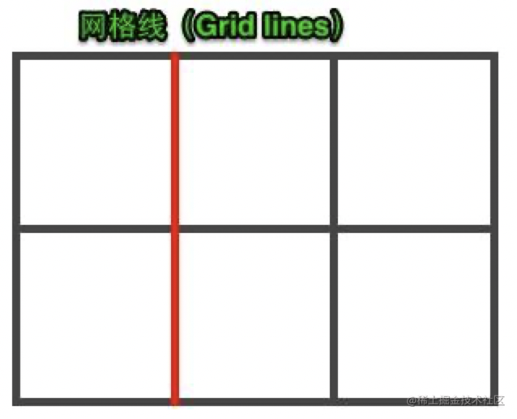
网格轨道(Grid Track)：网格轨道就是相邻两条网格线间的空间，就好比表格中行或列，所有在网格中的分为 grid column 和 grid row，每个网格轨道可设置一个大小，用来控制宽度或高度
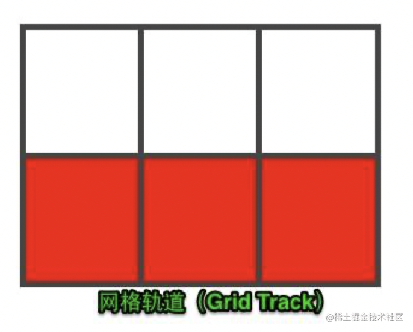
网格单元格(Grid Cell)：网格单元格是指四条网格线间的空间，所以它是最小的单位，就像表格中的单元格
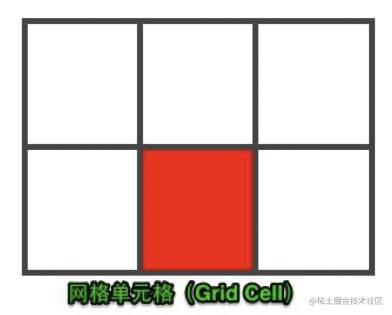
网格区域(Grid Area)：网格区域是由任意四条网格线组成的空间，所以可能包含一个或多个单元格，相当于表格中合并单元格后的区域
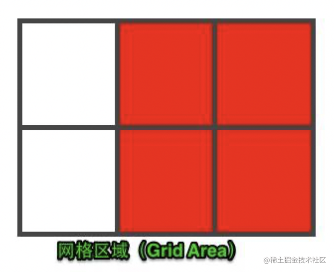
使用 grid 布局
使用 grid 布局很简单，通过 display 属性设置属性值为 grid 或 inline-grid 或 subgrid（该元素父元素为网格，继承父元素的行和列的大小）
网格容器中的所有子元素会自动变成网格项目（grid item），然后设置列（grid-template-columns）和行（grid-template-rows）的大小
- 设置
grid-template-columns时有多少个参数生成的grid列表就有多少个列 - 若没有设置
grid-template-columns，默认只有一列，宽度为父元素的100%
1 | <div class="grid-container"> |
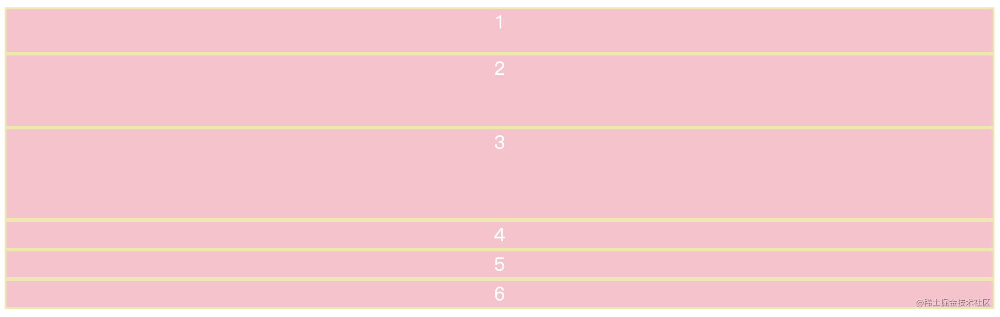
注：当元素设置了网格布局时
column、float、clear、vertical-align属性无效
设置了 grid-template-columns 几个参数，就有几列（不超过 grid item 个数），设置的 grid-template-row 参数就是每一列的高度（超出列数的高度无效），虽然设置了四个 grid-template-rows，但因为只有两行，所以只有前两个值生效
1 | .grid-container { |
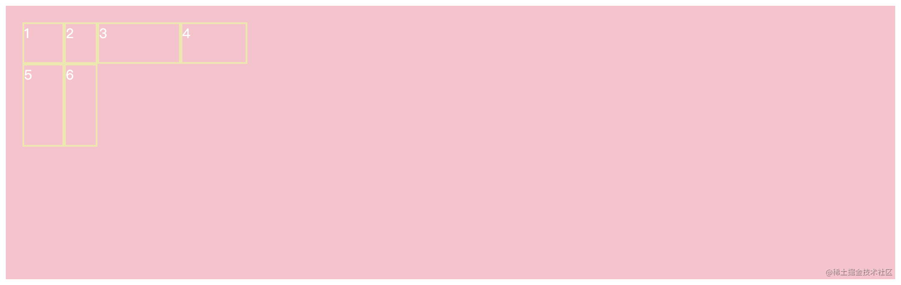
可以像 flex 一样设置每一列的宽度，使用了一个新的单位：fr
CSS fr单位是一个自适应单位，fr单位被用于在一系列长度值中分配剩余空间，若已指定了多个部分，则剩下的空间根据各自的数字按比例分配fr是基于网格容器可用空间来计算的（flex也是一样），所以若需要的话可以和其他单位混合使用
1 | grid-template-columns: 1fr 1fr 2fr; |
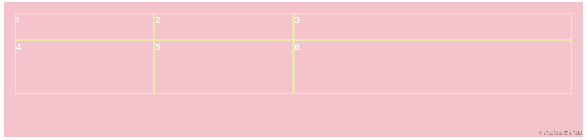
行或列最小、最大尺寸
minmax() 函数创建行或列的最小最大尺寸，第一个参数定义网格轨道的最小值，第二个参数定义网格轨道的最大值，可接受任何长度值也接受 auto 值，auto 值允许网格轨道基于内容的尺寸拉伸或挤压
1 | .grid-container { |
上面将第一行高度设为 minmax(100px,200px)，第二行高度设为 minmax(50px,200px)，容器总高度设为 300px，这时每一列的高度要怎么算呢？
- 先判断总高度是否小于第一列高度的最大值和第二列高度的最大值之和，若大于最大值之和，第一列和第二列的高度都为设置的最大值；若是小于最小值之和，第一列和第二列的高度都为设置的最小值
- 然后先用
总高度 300px - 第一列最小高度 100px - 第二列最小高度 50px = 150px - 第一列高度：第一列最小高度 100px + 150px/2 = 175px;
- 第二列高度：第二列最小高度 50px + 150px/2 = 125px;
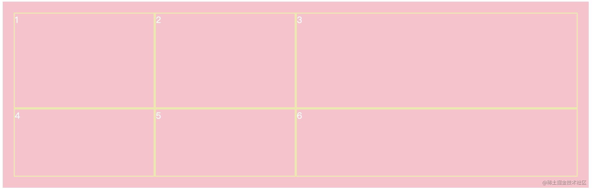
重复行或列
repeat() 属性可创建重复的网格轨道，这个适用于创建相等尺寸的网格项目和多个网格项目
repeat() 接受两个参数：第一个参数定义网格轨道应该重复的次数，第二个参数定义每个轨道的尺寸
1 | .grid-container { |
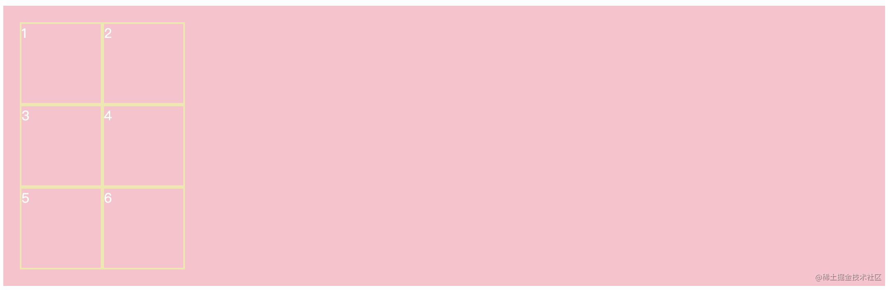
间距
grid-column-gap：创建列与列间的距离
grid-row-gap：行与行间的距离
grid-gap：grid-row-gap 和 grid-column-gap 两个属性的缩写形式
1 | .grid-container { |
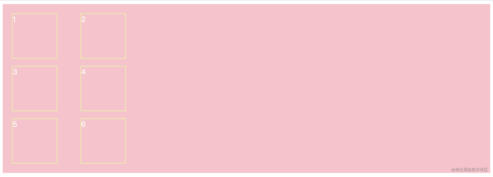
通过网格线定位 grid item
可通过表格线行或列来定位 grid item
grid-row：grid-row-start和grid-row-end的简写形式grid-column：grid-column-start和grid-column-end的简写形式
若只提供一个值，指定了 grid-row-start 和 grid-column-start 的值
若提供两个值，第一个值是 grid-row-start 或 grid-column-start 的值，第二个值是 grid-row-end 或 grid-column-end 的值，两者之间必须要用 / 隔开
1 | grid-row: 2; |
这四个值可用 grid-area 缩写，分别对应 grid-row-start、grid-column-start、grid-row-end、grid-column-end
1 | grid-area: 2 / 2 / 3 / 3; |
1 | .grid-container { |
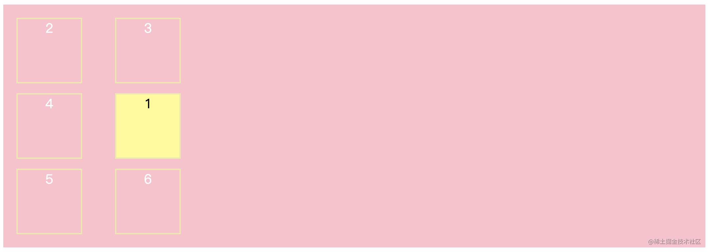
合并单元行与合并单元列
这个和 excel 中的合并单元行/列是相同的（需设置在 grid item 中）
也可使用 grid-row 和 grid-column 简写的形式，关键词 span 后紧随数字，表示合并多少个列或行，/ 前面是从第几行/列开始
1 | .grid-container { |
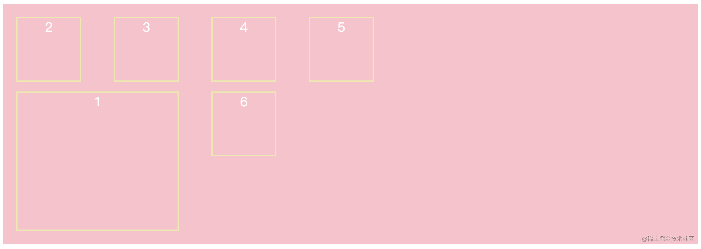
自定义网格线名称
在 grid 中，是可以自定义网格线的名称的，然后使用定义好的网格线来进行布局，[col1-start] 网格线名称一定要使用 [] 括住
下图文字和辅助线是后台添加的
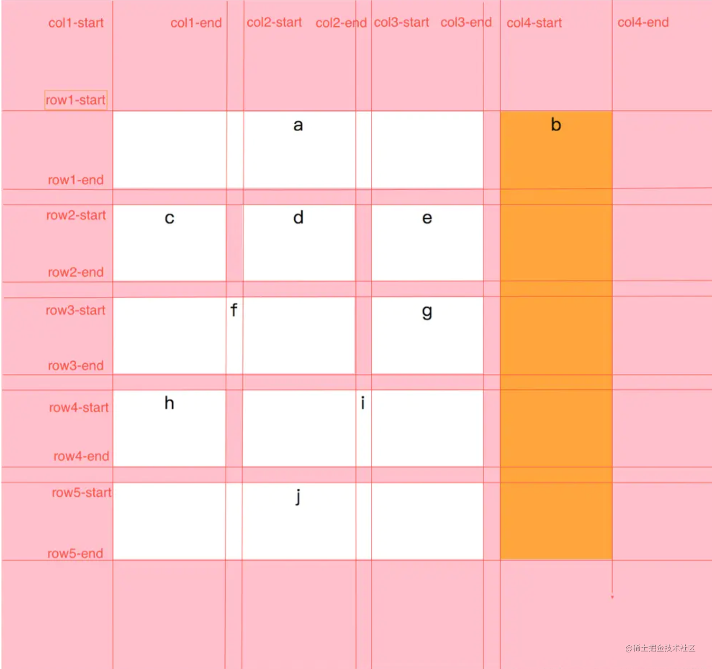
通过网格区域命名和定位网格项目
网格区域(grid-area) 是个逻辑空间，主要用来放置一个或多个网格单元格（Grid Cell），由四条网格线(Grid line)、网格区域每边一条、四边相交组织的网格轨道(Grid Track)
网格区域是有四条网格线交织组成的网格空间，该空间中可能是一个网格单元格也可能是多个网格单元格
在 CSS Grid Layout 中定义网格区域有两种方式：
通过网格线来定义
- 首先依赖于
grid-template-columns和grid-template-rows显式定义网格线，甚至是由浏览器隐式创建网格线，然后通过grid-area属性通过取网格线，组成网格线交织区域，则该区域就是所讲的网格区域 - 在使用
grid-area属性调用网格线，遵循的规则是grid-area: row-start/ column-start / row-end / column-end
- 首先依赖于
通过
grid-template-areas来定义- 在
CSS Grid Layout中还可通过grid-template-areas属性来定义网格区域的名称，然后需要放在对应网格区域的元素，可以通过grid-area属性来指定 - 重复区域可使用同一个名称来实现跨区域，另外对于空的轨道区域可以使用点号
.来代表
1
2
3
4
5
6
7
8
9
10
11
12
13
14
15
16
17
18
19
20
21
22
23<div class="grid-container">
<div class="header ">header</div>
<div class="content ">content</div>
<div class="sidebar ">sidebar</div>
<div class="footer ">footer</div>
</div>
.grid-container {
text-align: center;
padding: 20px;
display: grid;
grid-column-gap: 5px;
grid-row-gap: 5px;
background: pink;
grid-template-areas: "header header header header header"
"sidebar content content content content"
"footer footer footer footer footer";
grid-template-rows: 50px 150px 50px;
grid-template-columns: 200px 200px 200px;
}
.header { grid-area:header; background: #fff; }
.content { grid-area: content; background: #fffa90; }
.sidebar { grid-area: sidebar; background: #5bc0de; }
.footer { grid-area: footer; background: #ffff00; }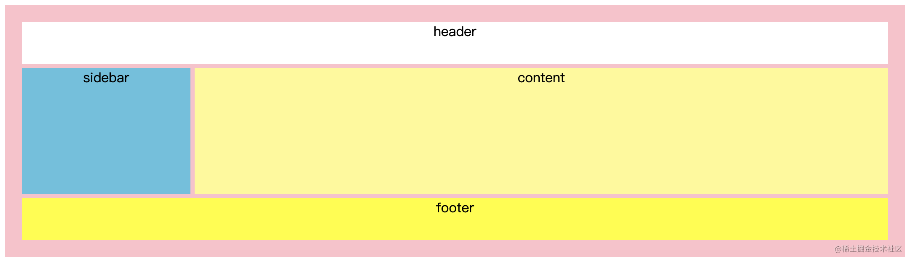
- 在
这样布局有一个优点：在不设置高度的情况下（父容器和 grid-template-rows 的值，或 grid-template-rows 设置为 auto 时，sidebar 和 content 的高度是一致的，且会根据其内的高度自适应），如：
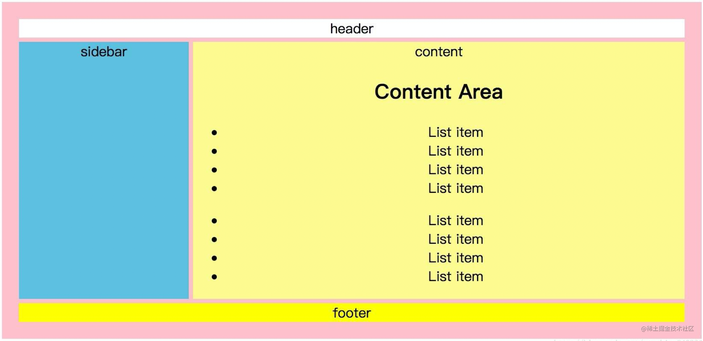
rem 布局
概念
rem 和 em 很容易混淆，两个都是 CSS 的单位且也都是相对单位，先有的 em 然后 CSS3 才引入的 rem，在介绍 rem 之前先来了解下 em：
em可让页面更灵活、更健壮，比起到处写死的px值，em似乎更有张力，改动父元素的字体大小则子元素会等比例变化，这一变化似乎预示了无限可能有人提出用
em来做弹性布局页面，但其复杂的计算让人诟病，甚至有人专门做了个px和em的计算器，不同节点像素值对应的em值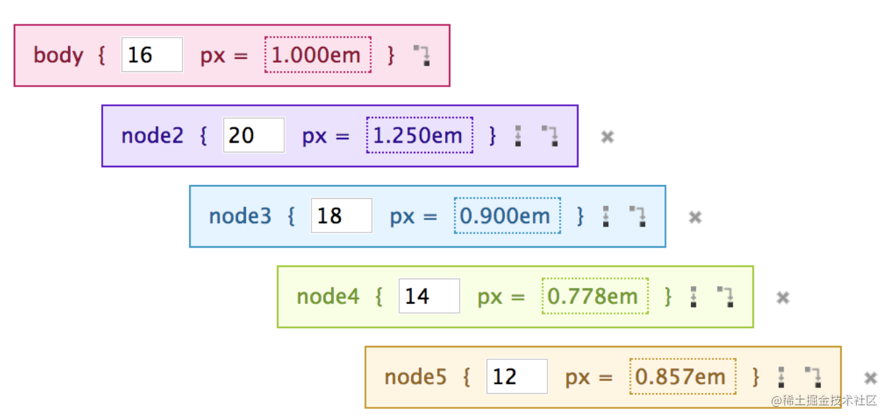
em做弹性布局的缺点：在于牵一发而动全身，一旦某个节点的字体大小发生变化，则其后代元素都得重新计算
em作为font-size的单位时，其代表父元素的字体大小；em作为其他属性单位时，代表自身字体大小 —— MDN
rem
rem作用于非根元素时，相对于根元素字体大小；rem作用于根元素字体大小时，相对于其出初始字体大小 —— MDN
1 | /* 作用于根元素，相对于原始大小（16px），所以 html 的 font-size 为 32px*/ |
rem 和 em 各有优点，尺有所短，寸有所长。技术没有什么对错，只有适合不适合，个人觉得：
em就是为字体和行高而生的，有时子元素字体就应该相对于父元素，元素行高就应该相对于字体大小- 而
rem的优点在于统一的参考系
rem 的布局原理
rem 布局的核心是设置好根 html 元素的 font-size，rem 布局的本质在我看来是等比缩放，一般是基于宽度
假设将屏幕宽度平均分成 100 份，每一份的宽度用 x 表示，x = 屏幕宽度 / 100，若将 x 作为单位，x 前的数值就代表屏幕宽度的百分比
若想要页面元素随着屏幕宽度等比变化，需上面的 x 单位，不幸的是 CSS 中并没有这样的单位，幸运的是在 CSS 中有 rem，通过 rem 这个桥梁可以实现神奇的 x
1 | div { width: 50x } /* 屏幕宽度的 50% */ |
若子元素设置 rem 单位的属性，通过更改 html 元素的字体大小就可让子元素实际大小发生变化
1 | html { font-size: 16px } |
若让 html 元素字体的大小恒等于屏幕宽度的 1/100，那 1rem 和 1x 等价
1 | html { fons-size: width / 100 } |
如何让 html 字体大小一直等于屏幕宽度的百分之一呢？可以通过 js 来设置，一般需在页面 dom ready、resize 和屏幕旋转中设置
1 | document.documentElement.style.fontSize = document.documentElement.clientWidth / 100 + 'px'; |
如何把 UE（UE 是用户体验(User Experience)的缩写，指用户界面功能图）图中获取的像素单位的值，转换为以 rem 为单位的值呢？–> 公式元素宽度 / UE 图宽度 * 100，假设 UE 图尺寸是 640px，UE 图中的一个元素宽度是 100px，根据公式则是 100 / 640 * 100 = 15.625
1 | div { width: 15.625rem } |
下面的表格是 UE 图等比缩放下元素的宽度：
| UE 图宽度 | UE 图中元素宽度 |
|---|---|
| 640px | 100px |
| 480px | 75px |
| 320px | 50px |
下面的表格是通过元素在不同屏幕宽度下的计算值：
| 页面宽度 | HTML 字体大小 | p 元素宽度 |
|---|---|---|
| 640px | 640/100 = 6.4px | 15.625 * 6.4 = 100px |
| 480px | 480/100 = 4.8px | 15.625 * 4.8 = 75px |
| 320px | 320/100 = 3.2px | 15.625 * 3.2 = 50px |
上图可以看出 UE 图宽度和屏幕宽度相同时两边得出的元素宽度是一致的
上面的计算过程有些繁琐，可通过预处理的 function 来简化过程，下面是 sass 的例子，less 类似
1 | $ue-width: 640; /* ue图的宽度 */ |
有了 postcss 后，这个过程应该放到 postcss 中，源代码如下：
1 | div { width: 100px2rem } |
在移动端中，一般为了防止在高清屏幕下像素不够用导致模糊，拿到的设计稿是 640px（iphone5 设备宽为 320 px）或 750px 的两倍稿（iphone6 设备宽为 375 px），按照设备宽度做了两倍的大小，那开发时在 CSS 中要设置什么尺寸呢？如何做到一份设计稿适配到不同机型中？
最佳方案：在 photoshop 或其他工具中量出某个元素、图片、文字的尺寸，然后直接写到代码中，额外的适配不需理会
- 基于此，可使用
SCSS来提供一系列的基础支持 - 为了便于计算，将页面分为
10个块，根据映射关系只需计算某个元素在页面中占了多少块（$rem），结合html中font-size的大小，就能在页面上设置好正确的元素大小
1 | width: px2rem(200); |
在 rem 布局中普遍采用 viewport scale 视窗缩放的方式，视窗缩放很简单，直接将 meta 标签中的 scale 进行更改，如 dpr 为 3 则 scale 如下。但缩放在某些安卓设备中支持度不太好，还需做其他检测（检测了现用的一些机型，应该还不完整哈），同时将最终计算的 dpr 放到 html 中，供 css 做一些特殊适配
1 | // 大部分dpr为2以下的安卓机型不识别scale，需设置不缩放 |
设置容器的最大最小宽度
上面随着拉伸，内容区越来越大，各元素尺寸也越来越大，已经进行了最小宽度的处理
要控制缩放的程度，关键有两个点：尺寸计算基准、容器宽度（尺寸计算基准位于 meta 标签中的 data-content-max，容器宽度位于 body 标签中）
- 在
JS中进行匹配控制，需注意因为已进行了视窗的缩放，clientWidth将会比设备宽度大，记得以dpr进行翻倍 - 若仅仅限制计算基准值，容器不限制（将
body标签中的属性去掉），就可实现某种流式效果（另一种方案）
1 | <!DOCTYPE html> |
文本大小是否用 rem 单位
有时不希望文本在 Retina 屏幕下变小，另外希望在大屏手机上看到更多文本，以及现在绝大多数的字体文件都自带一些点阵尺寸，通常是 16px 和 24px，所以不希望出现 13px 和 15px 这样的奇葩尺寸，可选择使用 px 直接定义，若要求不严格也可直接使用 rem 单位
1 | /* 设置字体大小，不使用rem单位， 根据dpr值分段调整 */ |
rem 不是银弹
rem 是弹性布局的一种实现方式，弹性布局可算作响应式布局的一种，但响应式布局不是弹性布局，弹性布局强调等比缩放，100% 还原；响应式布局强调不同屏幕要有不同的显示，如媒体查询
感觉一般内容型的网站都不太适合使用
rem，因为大屏用户可自己选择是要更大字体还是要更多内容，一旦使用了rem就剥夺了用户的自由，如百度知道、百度经验都没有使用rem布局；一些偏向app类、图标类、图片类的，如淘宝、活动页面比较适合使用rem，因为调大字体时并不能调大图标的大小
rem 可做到 100% 的还原度，但同时 rem 的制作成本也更大，同时使用 rem 还有一些问题，下面一一列举：
首先是字体的问题，字体大小并不能使用
rem；由于设置了根元素字体的大小，会影响所有没有设置字体大小的元素，因为字体大小是会继承的，要每个元素都显示设置的字体大小不太合理可以在
body上做字体修正，如把body字体大小设置为16px，但若用户自己设置了更大的字体，此时用户的设置将失效，如合理的方式是将其设置为用户的默认字体大小1
2html { fons-size: width / 100 }
body { font-size: 16px }字体的大小如何实现响应式呢？可通过修改
body字体的大小来实现，同时所有设置字体大小的地方都是用em单位，因为只有em才能实现同步变化，当然不同屏幕字体大小相同也是非常合理和不错的效果，需要自己做决策1
2
3
4
5
6
7
8
9
10
11
12@media screen and (min-width: 320px) {
body {font-size: 16px}
}
@media screen and (min-width: 481px) and (max-width:640px) {
body {font-size: 18px}
}
@media screen and (min-width: 641px) {
body {font-size: 20px}
}
div {font-size: 1.2em}
div a {font-size: 1.2em}若用户在
PC端浏览时页面过宽怎么办？一般都会设置一个最大宽度，大于这个宽度则页面居中，两边留白；设置body的宽度为100rem，并水平居中1
2
3
4
5
6
7
8var clientWidth = document.documentElement.clientWidth;
clientWidth = clientWidth < 780 ? clientWidth : 780;
document.documentElement.style.fontSize = clientWidth / 100 + 'px';
body {
margin: auto;
width: 100rem
}如果用户禁用了
js怎么办？其实这种用户真不多，要不放弃吧…1
2
3
4
5
6
7
8
9
10
11
12
13
14
15
16
17
18// 首先可以添加noscript标签提示用户
<noscript>开启JavaScript，获得更好的体验</noscript>
// 给html添加一个320时的默认字体大小，保证页面可以显示
html {fons-size: 3.2px}
// 如果想要更好的体验，不如添加媒体查询吧
@media screen and (min-width: 320px) {
html {font-size: 3.2px}
}
@media screen and (min-width: 481px) and (max-width:640px) {
html {font-size: 4.8px}
}
@media screen and (min-width: 641px) {
html {font-size: 6.4px}
}
rem 不是银弹，这个世上也没有银弹，每个方案都有优点也有缺点，学会做出选择和妥协才是王道
rem 仅能做到内容的缩放，但对于非矢量资源如图片放大时的失真并无法解决
其他布局方案
vw 布局
CSS3 带来了 rem 的同时也带来了 vw 和 vh
vw：视口宽度的1/100；vh：视口高度的1/100—— MDN
注意：REM 布局中用到了 JS 来动态设置 html 的 font-size，可能造成页面的抖动
可考虑比较新的 VW 布局，无需使用 JS，虽说在移动端 iOS 8 以上以及 Android 4.4 以上才获得支持，不过还是值得一用，若需兼容可以尝试 viewport-units-buggyfill
有了 vw，完全可绕过 rem 这个中介了，下面两种方案是等价的：
1 | /* rem 方案 */ |
在使用弹性布局时，一般会限制最小最大宽度，如在 pc 端查看页面，此时 vw 就力不从心了，vw 是根据设备宽度进行计算的，所以无法设置容器最大最小宽度。因为除了 width 有 max-width，其他单位都没有，而 rem 可通过控制 html 根元素的 font-size 最大值，而轻松解决这个问题
rem + vw 布局
为了解决纯 vm 布局不能设置最大最小宽度的问题，引入 rem
通过配置 html 根元素的 font-size 为 vw 单位，且配置最大最小的像素 px 值，在其他 CSS 代码中可直接使用 rem 作为单位，调用超级简单
1 | html { |
scss 里面的实现，同样是先定义一个映射关系，将页面宽度进行分块（为了防止值太大）
这里的 max-width 直接使用宽度值，因为使用的是 vw，视窗未缩放，而在页面标签（html 和 body）中，简单地配上属性代表是否需要限制宽度即可
同样是计算基准值和容器宽度两个方面，若仅仅限制计算的基准值也能实现“流式效果”
1 | html { |
对比
每个方案都能保证在不同机型下做到一定的适配
一般来说，可直接考虑使用 REM 布局，因 REM 使用了 JS 动态设置 html 的 font-size
但 scale 对安卓机型不太友好，要求极致的可选用 VW
纯 VW 布局不支持设置容器最大最小宽高，如需此功能则选用 REM + VW 布局
| rem | vm | rem + vm | |
|---|---|---|---|
| 容器最小宽度 | 支持 | 不支持 | 支持 |
| 容器最大宽度 | 支持 | 不支持 | 支持 |
| 高清设备 1px 边框 | 支持 | 支持 | 支持 |
| 容器固定纵横比 | 支持 | 支持 | 支持 |
| 优点 | 1、rem 单位兼容性好 2、支持高清设备 1px 边框时可按以往方式直接写 1px |
1、无需引入 js 2、vw 的用法比较规范 |
同 vm |
| 缺点 | 1、使用 js 设置 html 的 font-size 2、使用 scale 来设置 viewport 缩放，以支持高清设备中的 1px，但 scale 在安卓机中的兼容性不太好 3、rem 的用法不太标准，带有一些 hack 的特变 |
1、vw 单位在老旧机型上不兼容 2、为了支持高清设备的 1px，使用比较复杂的 scss mixin，占用 :after 伪类，会产生较多的代码 |
同 vm |
使用方式
常规方式是引入公共基础代码，然后在业务代码中调用
在 html 文件中可配置 data-content-max 参数来限制最大最小宽度
在 scss 基础部分还可自定义这几个值（若是 REM 布局，修改这些值还需在 rem.js 文件中同步修改）
1 | /* 移动端页面设计稿宽度 */ |